Project Overview & Đội ngũ Thực hiện (25%/người)
- 84.2% Sinh viên năm 3: Gặp khó khăn khi tìm đàn anh cựu SV cùng ngành để xin review CV thực tập OJT và phỏng vấn thử. Group Facebook thường bị trôi bài, nhiều quảng cáo rác.
- 100% Cựu sinh viên (Alumni): Sẵn sàng hỗ trợ đàn em nhưng sợ bị lộ số điện thoại cá nhân và bị làm phiền ngoài giờ làm việc.
- Giải pháp FPT Alumni Connect: Mạng xã hội chuyên biệt cho 5 Campus FPT, chia sẻ Google Calendar Link (`US-11`), Chat trao đổi và bộ lọc danh bạ thông minh.
| Thành viên | Vai trò Trách nhiệm Chính | 2 Màn hình Sở hữu |
|---|---|---|
| TV1: Võ Quang Tâm (SE192621) | UX Research, Persona 12 trường, IA, User Flow | S01 Login, S02 Verify |
| TV2: Trương Chí Trung (SE193059) ⭐ | AI Prompting (Stitch), AI Critique, 3 Iterations | S03 Home, S04 Directory |
| TV3: Nguyễn Phương Khải (SE183590) | Design System Tokens, 9 Nhóm Component Auto Layout | S05 Profile, S06 Chat |
| TV4: Đỗ Trọng Tín (SE190218) | Interactive Prototype 3 Flows, A11y & Flutter Handoff | S07 My Profile, S08 Privacy |
README.md
phan-cong-nhom4.md
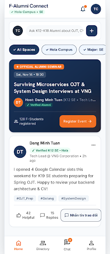
Problem Statement & Persona Chuẩn 12 Trường
- E01 (Khảo sát): 120 sinh viên K18–K19 FPTU TP.HCM & Hà Nội (84.2% cần xem lịch rảnh trước khi nhắn tin).
- E02 (Phỏng vấn sâu): 8 cựu sinh viên K12–K15 (100% yêu cầu giấu số điện thoại và email cá nhân).
- E03 (Quan sát): 15 sinh viên dùng máy 1 tay ở sảnh trường nắng gắt → Bắt buộc vùng chạm 48dp & tương phản 7.0:1.
- E04 (Tân sinh viên): 45 sinh viên K20 cần phân loại chính xác Campus và ngành học.
- Bối cảnh & Hạn chế: Cận thị 3 độ, dùng máy bằng 1 tay ngoài trời nắng gắt (Android 360×800dp).
- Jobs To Be Done (JTBD): "Khi chuẩn bị nộp hồ sơ OJT, tôi muốn xem được hồ sơ chi tiết và đường dẫn Google Calendar của cựu sinh viên cùng ngành để chủ động trao đổi đúng lúc mà không làm phiền."
- Chỉ số thành công (Success Metric): Tìm thấy Mentor và mở xem lịch rảnh tham khảo trong < 2 phút.
ux/persona.md (Bộ 3 Persona P01, P02, P03 chuẩn 12 trường)
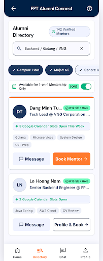
Information Architecture (Kiến trúc Thông tin)
- Tab 1: Home (
S03): Bảng tin trao đổi kinh nghiệm OJT, bộ lọc nhóm ngành và hỏi đáp. - Tab 2: Directory (
S04): Danh bạ cựu SV, lọc theo Campus (Hola, HCMC...) và Ngành (SE, AI, IA...) → Mở màn hình conS05 Member Public Profile. - Tab 3: Chat (
S06): Phòng chat 1-1 gửi CV, nhận xét hồ sơ và Icebreaker Chips. - Tab 4: Profile (
S07): Hồ sơ cá nhân, nhập link Google Calendar → Mở màn hình conS08 Privacy & Blocked List.
S01 Login & Google SSO: Đăng nhập Email / Google SSO FPT, nhánh khóa tạm 60s khi nhập sai mật khẩu 5 lần.S02 Student Verification: Xác thực Campus, Ngành, MSSV và mã OTP 6 số.
ux/user-flow.md · Figma Page 01 (01 User Flow)
[S03] Feed & Q&A
[S04] Search → [S05] Detail
[S06] Direct Chat Room
[S07] Info → [S08] Privacy
Three User Flows (3 Luồng Thao tác Trọng tâm)
S01 Login → Bấm "Chưa xác thực? Xác thực ngay" → S02 Student Verify (Chọn Campus, Ngành, MSSV, nhập OTP) → Nhập thành công chuyển sang S03 Home. Có nhánh khóa 60s khi nhập sai 5 lần.
Từ S03 bấm Tab Directory S04 → Chọn Filter Chip ✓ Hola + ✓ SE → Bấm chọn thẻ Mentor Đặng Minh Tuấn → Màn hình S05 Profile → Bấm nút phụ 📅 Xem Lịch rảnh tham khảo (mở Google Calendar `US-11`) hoặc bấm nút chính 💬 Nhắn tin trao đổi mở S06 Chat Room.
Vào S07 My Profile cập nhật Link lịch → Nếu mất mạng: Hiện Network Error Banner + nút ↻ Retry Save giữ nguyên form → Vào S08 Privacy bật/tắt 5 công tắc có nhãn [ON]/[OFF] và quản lý Chặn quấy rối (`US-10`) có Overlay Dialog.
ux/user-flow.md (Sơ đồ Mermaid 3 Flows) · Figma Page 01
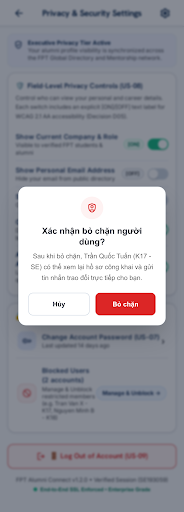
AI UI Generation (Google Stitch Initial Prompt & v0)
- 1. Persona: "Design for Trương Chí Trung (P01, 20yo, Software Engineering student, 3-diopter myopia, one-handed mobile outdoor use in bright sunlight)..."
- 2. Task Scope: Mạng xã hội kết nối cựu SV & sinh viên FPT (US-04 Feed, US-06 Search Directory, US-08 Mentor Detail, US-09 Privacy, US-11 Calendar).
- 3. Mobile Standard: Android phone standard
360×800dp(8dp grid layout). - 4. Accessibility (A11y): WCAG 2.2 AA compliant, contrast ratio ≥ 4.5:1, touch target ≥ 48×48dp, body text ≥ 14sp.
- 5. Brand Tokens: FPT Navy (
#1B365D), CTA Orange (#F27024), Surface (#FFFFFF).
- Sinh ra 4 màn hình cơ sở:
Home Feed,Directory Search,Alumni Detail, vàProfile Settings. - Đánh giá sơ bộ: Giao diện sạch sẽ, bố cục hiện đại nhưng còn mắc nhiều lỗi Heuristics, vùng chạm quá nhỏ và xuất hiện tính năng sai lệch (Booking 1-1).
ai/ai-design-log.md · assets/stitch/v0_*.png
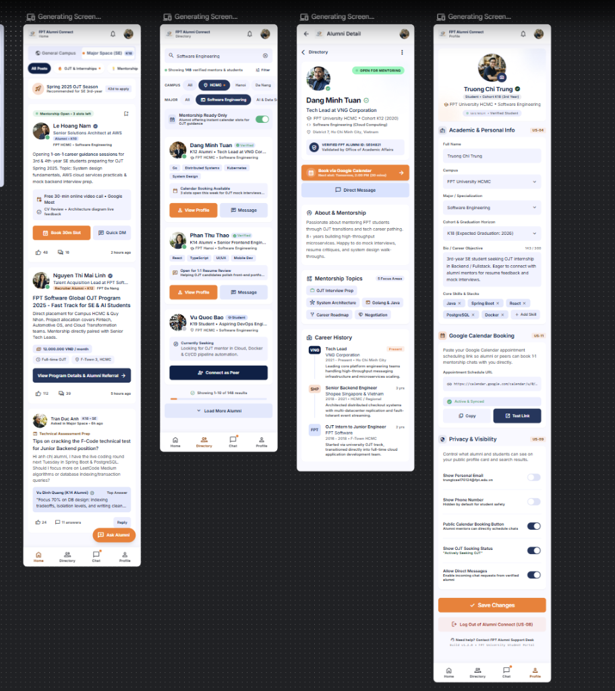
AI Iterations & UX Critique (3 Vòng lặp & 7 Lỗi C01–C07)
- C01 (Heuristic #4): Nút
< Directorytrên AppBar bị lặp với TabBar dưới. - C02 (Heuristic #8): Nút nổi FAB che khuất bài viết dưới cùng trên Home Feed.
- C03 (SC 2.5.5 / 1.4.3): Filter Chips chỉ cao
28dp(chuẩn 48dp), chữ mờ#9CA3AF(2.6:1). - C04 (SC 1.4.1): Switch và Chip chỉ dùng màu xanh/xám, người khiếm thị màu không rõ trạng thái.
- C05 (Heuristic #2): Lộ mã nghiệp vụ kỹ thuật
US-08,US-11lên nhãn nút bấm của người dùng. - C06 (Heuristic #9): Thiếu thông báo lỗi và nhánh phục hồi khi mất kết nối mạng trên Profile.
- C07 (Feature Misalignment): AI tự ý sinh luồng "Book Paid Session 1-1" và chấm sao 5⭐.
- Vòng 1 (I01 — S05 & S03): Xóa thanh Header thừa, bỏ FAB che bài, thêm nút Chặn
🚫 Block This User(48dp). - Vòng 2 (I02 — S04): Nâng Chip lên
48dp, thêm dấu✓, đổi màu chữ phụ lên#595959(đạt 7.0:1). - Vòng 3 (I03 — S07 & S08): Xóa mã US-xx, thêm
Network Error Banner+Retry Save, thêm nhãn[ON]/[OFF]cho toàn bộ Switch.
ai/ai-design-log.md · Bảng ảnh Before/After trong assets/stitch/
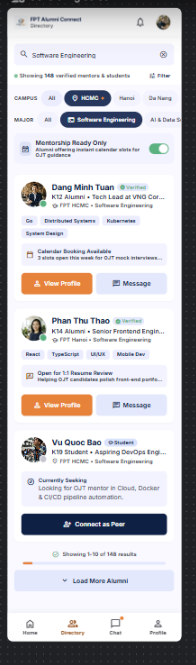
Design Decisions (Quyết định Thiết kế Accept / Modify / Reject)
| Mã | Loại Quyết định | Nội dung Phản biện & Cơ sở Quyết định của Nhóm 4 |
|---|---|---|
| D01, D04 | ACCEPT | Chấp nhận đề xuất A11y: Đổi màu chữ phụ sang #595959 (đạt 7.0:1) và chuẩn hóa toàn bộ touch target lên 48×48dp (WCAG SC 2.5.5). |
| D05, D06 | ACCEPT | Chấp nhận khắc phục lỗi Heuristics: Thêm chữ [ON]/[OFF] trên Switch (không dựa vào màu), thêm Network Error Banner + Retry Save trên S07. |
| D02 | MODIFY | Sửa đổi đề xuất FAB: AI đề xuất dời vị trí nút nổi FAB. Nhóm quyết định xóa hẳn FAB và đưa thanh câu hỏi lên đầu Home Feed để không bao giờ che bài viết. |
| D07 ⭐ | REJECT | TỪ CHỐI HOÀN TOÀN ĐỀ XUẤT BOOKING 1-1 & CHẤM SAO CỦA AI: - Trái với tinh thần hỗ trợ tự nguyện của Cựu SV FPT. - Trái với yêu cầu của giảng viên (chỉ chia sẻ link lịch cá nhân Google Calendar US-11).- Đổi thành CTA chính: 💬 Nhắn tin trao đổi (Direct Message) và nút phụ: 📅 Xem Lịch rảnh tham khảo. |
design/design-decisions.md (Bảng quyết định D01–D07)
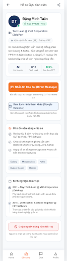
Wireframe → Final UI (8 Màn hình Chuẩn 360×800dp)
S01 Login & Google SSO: Xác thực tài khoản FPT, đăng nhập 1 chạm Google SSO.S02 Student Verification: Khai báo thông tin học vụ (Campus, Ngành, MSSV) + OTP.S03 Home Feed & Q&A: Bảng tin chia sẻ kinh nghiệm, phân loại chuyên ngành.S04 Directory Search: Danh bạ cựu SV, bộ lọc Campus/Ngành vùng chạm 48dp.S05 Alumni Public Profile: Hồ sơ chi tiết, nút Nhắn tin & Link Google Calendar.S06 Direct Chat Room: Khung chat đính kèm CV thực tập và Icebreaker Chips.S07 My Profile & Link Sharing: Quản lý hồ sơ cá nhân và dán link lịch làm việc.S08 Privacy & Blocked List: Thiết lập bảo mật 5 công tắc [ON]/[OFF] & Chặn quấy rối.
Các trạng thái S04 Skeleton Loading, Empty State, S07 Network Error, và S08 Block Dialog được đặt riêng làm Frame biến thể, không tính gian lận vào 8 màn hình chính theo quy chuẩn.
design/screen-spec.md · Figma Page 02 (Wireframe) & Page 03 (Final UI)
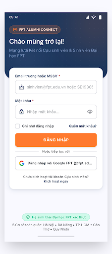
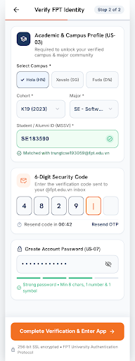
Design System & 9 Nhóm Component (Auto Layout + Variants)
- Màu sắc 2 tầng: Primitive (
blue-900,orange-500) → Semantic (color/brand/primary = #1B365D,color/brand/cta-orange = #F27024,color/text/secondary = #595959). - Typography: Tiêu đề
Hanken Grotesk(Bold), Thân bàiInter(14sp / 16sp, line-height 1.5). Không có chữ nào nhỏ hơn 14sp trong toàn bộ ứng dụng. - Spacing & Grid: Lưới chuẩn
8dp(8, 16, 24, 32dp), bo góc8dp/12dp, Elevation mềm mại.
CMP-01 Button(Primary, Secondary, Danger, Ghost, Outlined) — 100% cao 48dp–56dp.CMP-02 Input & Controls(TextField, Filter Chip có dấu ✓, Switch có nhãn [ON]/[OFF]).CMP-03 Cards(Alumni Card, Feed Post Card) — Padding 16dp Auto Layout.CMP-04 Navigation(BottomNavigationBar 4 tabs, TabIndicator).CMP-05 AppBar(Default Back AppBar, Search Header).CMP-06 Dialog(Confirmation Overlay Dialog, Block Alert).CMP-07 Loading(Skeleton Card Shimmer, Circular Progress).CMP-08 Empty State(Zero search result minh họa trực quan).CMP-09 Error State(Network Error Banner kèm nút Retry Save).
design/DESIGN.md · Figma Page 04 (Design System) & Page 05 (Components)
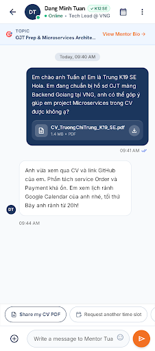
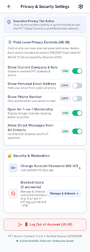
Accessibility & Responsive QA (WCAG 2.2 AA & Multi-screen)
- 1. Tương phản màu sắc (Contrast Ratio):
- Chữ chính#0F172Atrên nền trắng đạt 17.74:1.
- Chữ phụ#595959đạt 7.00:1 (vượt xa chuẩn tối thiểu 4.5:1 của WCAG).
- Nút CTA cam#F27024với chữ trắng đạt 3.2:1 cho UI Control. - 2. Vùng cảm ứng & Kích thước chữ (Touch Target & Font Size):
- 100% nút bấm, filter chip, icon, switch đều đạt kích thước tối thiểu48×48dp.
- Không có bất kỳ dòng chữ nội dung nào nhỏ hơn14sp. - 3. Không chỉ dựa vào màu sắc (Not Color Alone):
- Chip đang chọn có icon tích✓.
- Công tắc Switch có huy hiệu văn bản[ON]hoặc[OFF].
- Kiểm thử chuẩn trên
360×800dp(chuẩn cơ sở) và412×915dp(máy màn hình lớn). - Quy tắc co giãn: Thẻ Card và Input dùng
Fill Container(chiều ngang), khoảng cách mép cố định16dp. Khi xoay ngang hoặc trên Tablet (≥600dp), BottomBar tự chuyển sang NavigationRail.
design/design-decisions.md (Bảng QA Checklist 20 tiêu chí Simplicity 100/100)
Interactive Prototype (Trình diễn Tương tác 3 Flows trên Figma)
- Starting Point 1 (Flow 1 Auth): Từ
S01 Loginchuyển sangS02 Student Verificationvà vàoS03 Home Feed. - Starting Point 2 (Flow 2 Directory): Từ
S04 Directoryclick thẻ cựu SV Đặng Minh Tuấn → Chuyển cảnh quaS04 Skeleton Loading→ HiệnS05 Detail→ Bấm💬 Nhắn tin trao đổimởS06 Chat Room. - Starting Point 3 (Flow 3 Safety): Từ
S05cuộn xuống bấm🚫 Chặn người dùng→ MởBlock Confirmation Dialogdạng Overlay → SangS07 My Profilethử lỗi mạng và nút↻ Retry Save→ SangS08 Privacy.
- Overlay Dialog: Hộp thoại xác nhận chặn người dùng mở đè lên màn hình với lớp phủ làm mờ
rgba(0,0,0,0.5). - Animated Transition: Chuyển trang mượt mà
Smart Animate / Instantchuẩn 200–300ms. - Điều hướng 2 chiều: Mọi màn hình con đều có nút
← Backquay về đúng màn hình trước đó, không bao giờ rơi vào ngõ cụt.
docs/interactive-prototype-guide.md
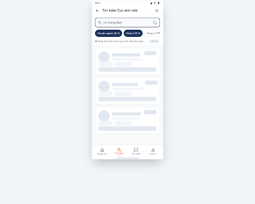
Flutter Handoff & Architecture Summary (Sẵn sàng Lập trình)
1. Layout Structure(SingleChildScrollView, ListView, Column, Padding 16dp).2. Components Used(Ánh xạ chính xác tới CMP-01 → CMP-09).3. States & Triggers(Default, Focused, Error, Loading Skeleton, Empty).4. Interactions(onTap, onSubmitted, onDismissed kèm rung phản hồi Haptic).5. Navigation Contract(Route path, arguments truyền vào nhưalumniId,chatId).6. UI Constraints & A11y(Semantics label, touch target ≥48dp, Regex validation).
- Bảng 1 (Tokens → Flutter):
color/brand/primary → AppColors.navyPrimary,font/heading → HankenGroteskStyle. - Bảng 2 (Components → Widgets):
CMP-01 → ElevatedButton,CMP-02 → FilterChip / SwitchListTile,CMP-04 → NavigationBar. - Mã nguồn Dart đầy đủ: Kèm file
app_theme.dartvà code hoàn chỉnh cho mànS01,S02,S05,S06sẵn sàng cho giai đoạn code Lab 3.
handoff/flutter-handoff.md (Tệp đặc tả kỹ thuật 109KB hoàn chỉnh)
static const navyPrimary = Color(0xFF1B365D);
static const ctaOrange = Color(0xFFF27024);
static const textSecondary = Color(0xFF595959);
}
// Touch Target 48dp Rule
elevatedButtonTheme: ElevatedButtonThemeData(
style: ElevatedButton.styleFrom(
minimumSize: const Size(double.infinity, 48),
),
),